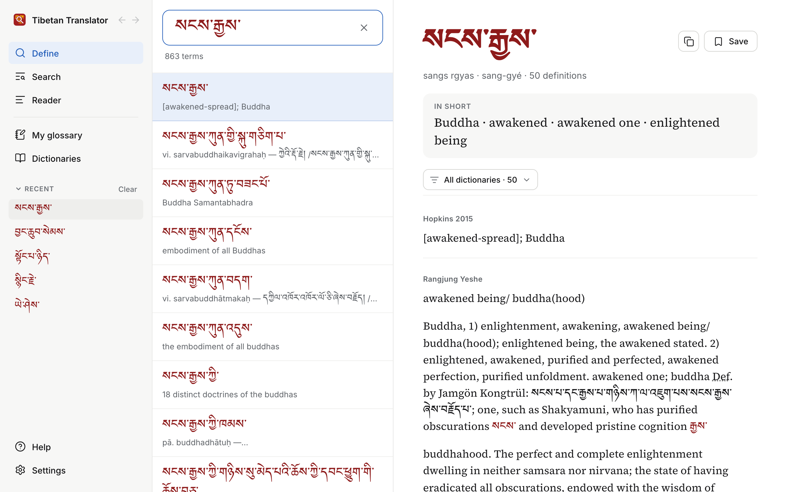
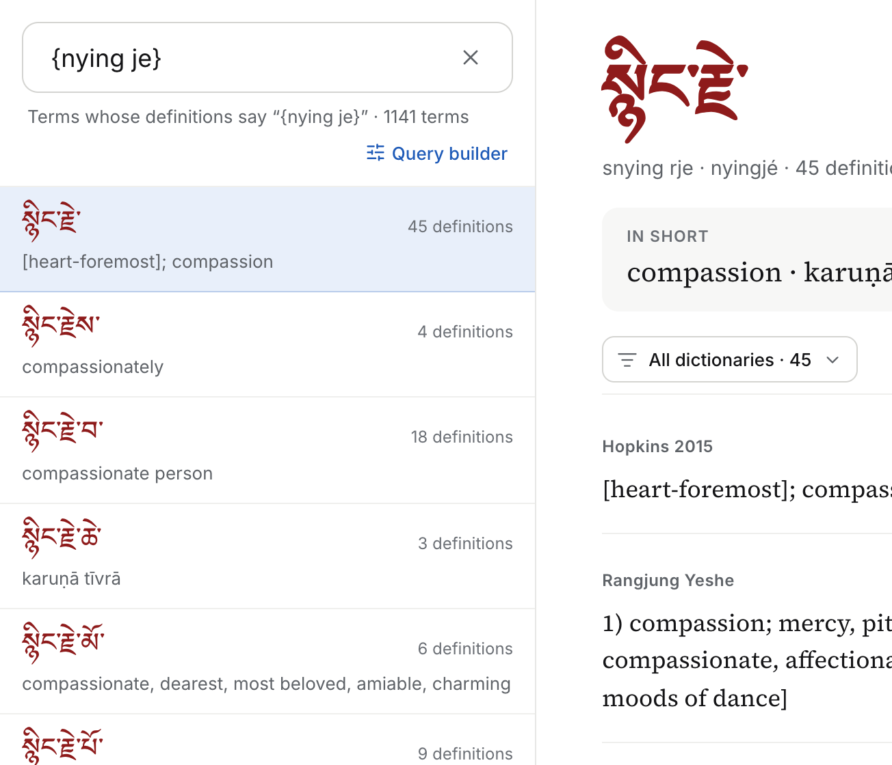
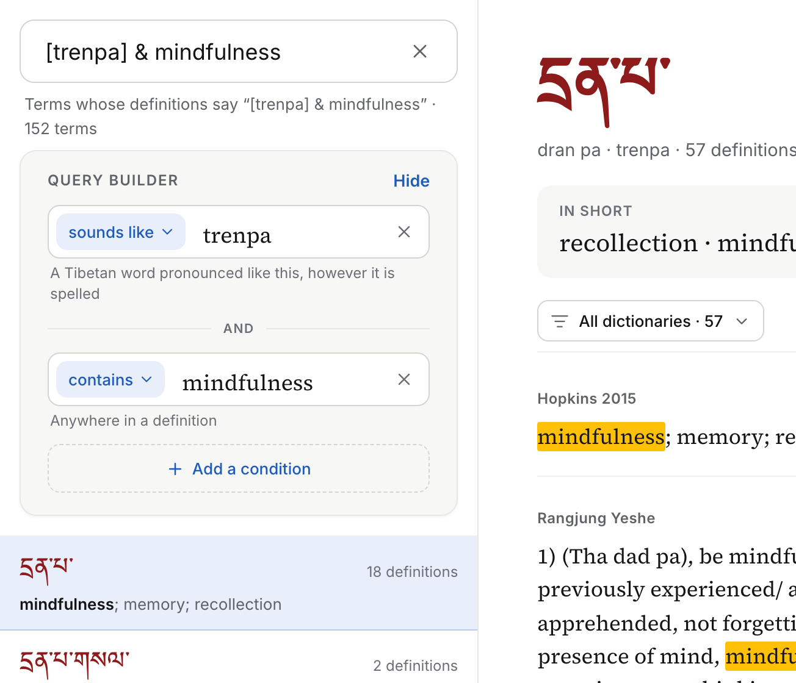
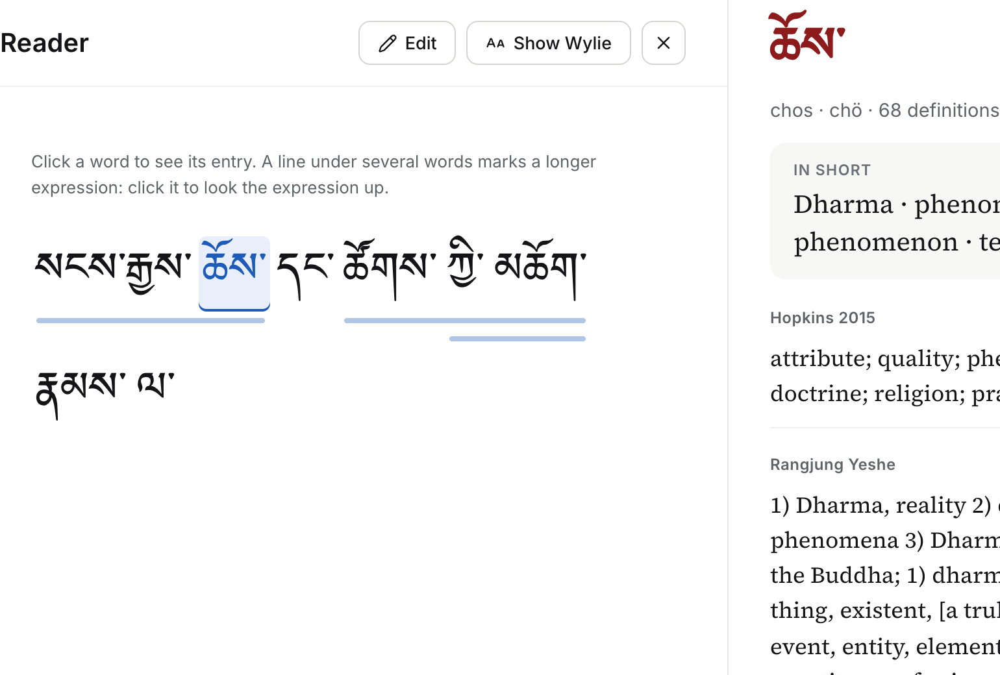
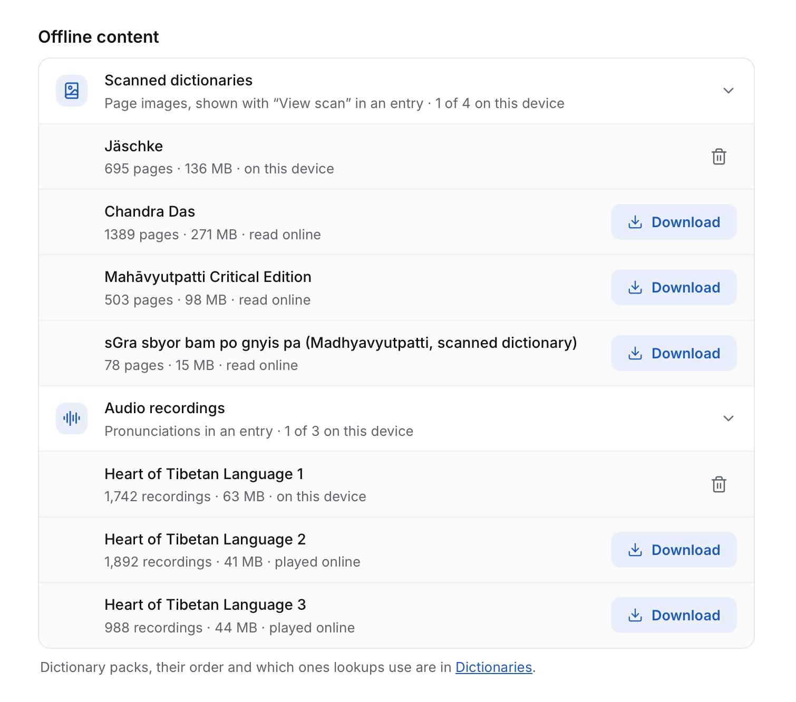
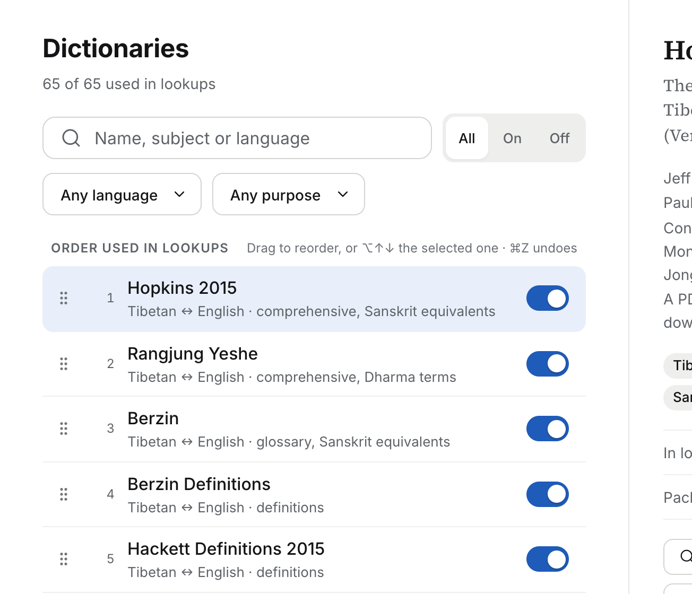

The best Tibetan dictionaries, in one place
Look up a Tibetan term, in Unicode or Wylie, across more than 60 dictionaries at once, read whole texts word by word, and keep it all with you offline.
Download- Free, for every computer:
- macOS, Apple silicon
- macOS, Intel
- Windows
- Windows, .msi
- Linux, .deb
- Linux, AppImage
snying rje · nyingjé · 45 definitions
compassion · karuṇā · kāruṇya

Quick lookup
Copy Tibetan anywhere on your computer and press a shortcut: its definitions open in a small window, over whatever you are reading.
Search by sound
Not sure how a word is spelled? Type how it sounds, like
{nying je}, and see every word that sounds like it,
however it is written.

Combine conditions
Too many results? Narrow them down with &, or
build the query one condition at a time, each one read as a short
sentence.

Read a whole text
Paste a Tibetan text and read it word by word: click a word to see its entry beside it. Longer expressions are underlined, so you can look them up too.

Works fully offline
Once downloaded, everything works without a connection: the dictionaries, the scanned dictionaries' pages and the recorded pronunciations all stay on your device.

Pick your dictionaries
More than 60 dictionaries. Find them by name, subject or language, turn on the ones you want and drag them into the order you prefer.
